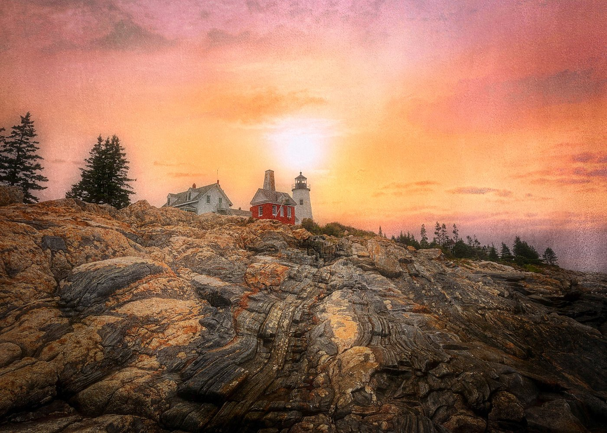
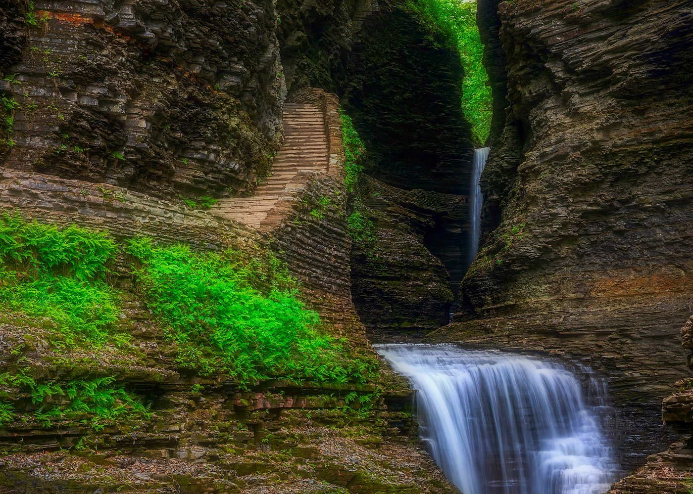

Three real examples — removing distractions, enhancing skies, and adding fine art texture — with step-by-step techniques any photographer can use today.
I've been a landscape and wildlife photographer for over a decade, shooting with a Canon 5D Mark IV across some of America's most stunning wild places — from the sea stacks of the Oregon Coast to the glacier lakes of Alaska. But here's something I've only recently started talking openly about: the difference between a good photograph and a print someone wants to hang on their wall often comes down to what you remove, not just what you capture.
AI tools built into Photoshop — specifically Generative Fill, the upgraded Remove tool, and Neural Filters — have genuinely changed how I finish my work. What used to take hours of painstaking clone-stamp work now takes minutes, and the results are often indistinguishable from a scene with no one in it.
In this post I'm walking through three real images from my portfolio, showing exactly what I did in Photoshop and why. Whether you're a photographer selling prints or just trying to get the most out of your landscape work, these techniques will change how you think about post-processing.

Moody Oceanside Beach, Oregon Coast — Monochrome fine art print. Available at dsproul.com
This scene on the Oregon Coast had everything I wanted — dramatic rock formations, crashing surf, sea stacks disappearing into fog. What it also had were three people standing on the rocks in the middle distance and a cluster of birds perched on the largest formation. Neither added to the image; both pulled the eye away from the atmosphere I was going for.
This is exactly the kind of problem that used to mean hours with the Clone Stamp tool, carefully painting in ocean and rock textures that matched the surrounding area. With Generative Fill, it took under ten minutes.
(Ctrl/Cmd + J) — always work non-destructively.(W). Hover over each person or bird — Photoshop AI automatically detects and highlights the subject. Click to select.Shift and click each one to add to the selection. Expand the selection slightly: Select → Modify → Expand by 4–8px to capture edge pixels.For this image I converted to monochrome in Camera Raw before removing the distractions, which made the selection process cleaner — the AI has an easier time matching tones when there's no color variance to contend with. The conversion itself used the Black and White Mix panel with heavy blue channel reduction (to darken the sky to near-white fog) and boosted reds and yellows to bring out the texture in the wet rocks.

Pemaquid Point Lighthouse, Maine — Fine art textured sunrise. Available at dsproul.com
The original shot of Pemaquid Point had the lighthouse, the extraordinary layered granite foreground, and a reasonably nice sky — but "reasonably nice" doesn't stop anyone in their tracks. The sky I captured was flat and slightly hazy. The foreground rocks, which are genuinely one of the most spectacular geological formations on the Maine coast, deserved a sky that matched their drama.
What makes this image feel like a painting rather than a straight photograph is a combination of two techniques: Sky Replacement with a hand-blended transition, and a fine art texture overlay applied through a blend mode.
(File → Place Embedded). Scale to cover the full image.
Watkins Glen State Park, New York — Gorge waterfall and ancient stone steps. Available at dsproul.com
Watkins Glen is one of those places that photographers chase for years. The gorge with its 200-foot waterfalls, ancient sedimentary walls, and hand-cut stone staircase is genuinely breathtaking in person. It is also, on any given summer day, packed with visitors. The original of this image had people on the staircase, a couple in bright jackets in the lower right foreground, and some trash and signage that had worked its way into the lower left.
Foreground distractions like scattered rocks, wrappers, or out-of-place bright spots are often harder to remove than people because the surrounding texture is complex — water, moss, stone all meeting at irregular angles. This is where Photoshop's Content-Aware Fill and the newer Remove Tool used in combination give the best results.
(L) to draw a loose selection around each person. Go to Edit → Content-Aware Fill. In the workspace, paint out any sampling areas that would pull from similar people or bright spots. Click Generate.(J) to touch up any seams.There's an ongoing conversation in photography about whether AI editing "counts" — whether removing a person from a landscape print is somehow dishonest. My view is straightforward: fine art photography has always been about vision, not documentation. Ansel Adams dodged and burned in the darkroom. Every color photographer since Kodachrome has pushed saturation and contrast in post. The question isn't whether you edit; it's whether the final image honestly represents the character and atmosphere of the place you photographed.
Every location in my work is real. The light is real. The compositions are made by standing in those places, often for hours, waiting for the right conditions. What AI tools allow me to do is remove the accident of timing — the person who walked into frame at exactly the wrong moment — and reveal the scene as it actually feels to be there.
The result is photography that holds up on a wall. Not just on a screen at thumbnail size, but as a 36-inch canvas print above a sofa, or as a metal print in a hotel lobby. That's the standard I hold my work to, and it's why I've invested in learning these tools deeply.
Adobe Photoshop 2025 — Generative Fill, Sky Replacement, Remove Tool, Content-Aware Fill, Camera Raw Filter
Adobe Lightroom Classic — initial RAW processing, lens correction, basic exposure, median stacking via Photomerge
Camera: Canon 5D Mark IV · Canon 90D · Canon 7D · Multiple lenses
Note: Generative Fill requires an Adobe Creative Cloud subscription and an internet connection. It uses Adobe Firefly AI, which is trained on licensed imagery.
All three images shown in this post — and hundreds more from Alaska, Oregon, Colorado, the Smoky Mountains, and beyond — are available as museum-quality canvas, metal, framed, and acrylic prints.
Browse the portfolio at dsproul.com →Dan Sproul is an award-winning fine art photographer based in Lima, Ohio. His commercial work includes large-scale installations at Drury Inn hotels and the Wexner Medical Center at Ohio State University. His prints have sold to collectors, interior designers, and businesses across all 50 states and 21 countries. Follow his work at dsproul.com.